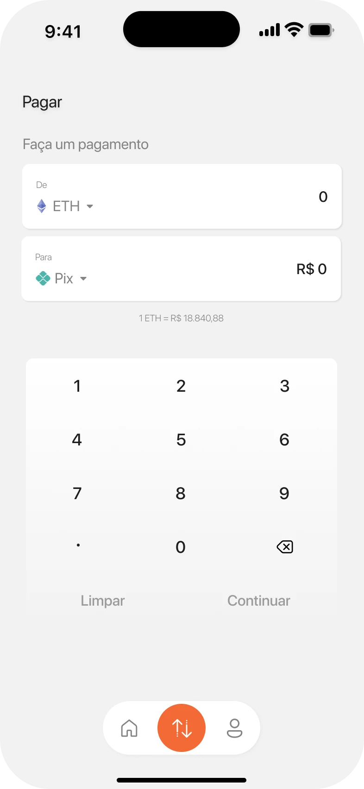

1Both sidesFrom ETH on top, to Pix below.
2Live rateNo maths to do.
3Built-in keypadBoth values stay in view.
4Continue wakes upOnly once there's an amount.
Pay · amount
One screen, both sides of the trade
- “From ETH” on top, “To Pix” below: the same pattern people know from exchanges and currency apps.
- The live rate sits right under the fields, so there's no maths to do.
- A built-in keypad keeps both numbers visible while typing, with no system keyboard in the way.
- Continue only wakes up once there's an amount to pay.